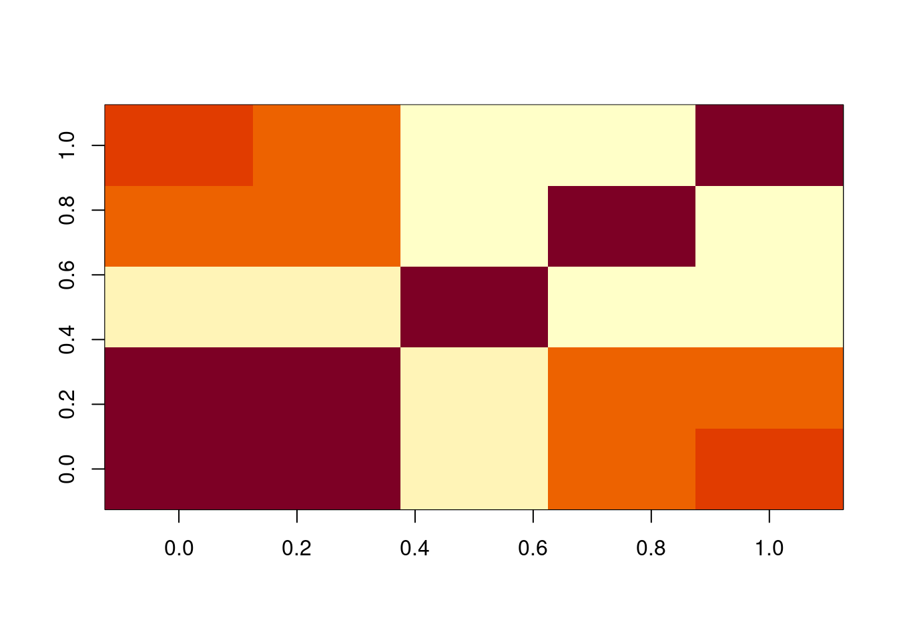

ggplot(ames_df) +
geom_point(aes(x=Gr.Liv.Area, y=SalePrice))Transforming regressors.
\(\,\)
Goals
- Discuss transformations of regressors
- Define R2, and talk about its relationship to the regressors
- Polynomial regressors
- Interaction regressors
Define R squared
We have defined \(\Yhat = \X \betavhat\), and shown that \(\Yhat = \proj{X} \betavhat = \X (\X^\trans\X)^{-1}\X^\trans \Y\). We can call
\[ \begin{aligned} \Yhat^\trans \Yhat :={}& ESS = \textrm{"Explained sum of squares"} \\ \Y^\trans \Y :={}& TSS = \textrm{"Total sum of squares"} \\ \resvhat^\trans \resvhat :={}& RSS = \textrm{"Residual sum of squares"}. \end{aligned} \]
In your homework, you will show that \(TSS = ESS + RSS\). It follows immediately that \(0 \le ESS \le TSS\), and we can define \[ R^2 := \frac{ESS}{TSS} \in [0, 1]. \]
In a sense, high \(R^2\) means a “good fit” in the sense that the least squares fit has low error.
High \(R^2\) is not necessarily a good fit
But high \(R^2\) does not necessarily mean that the fit is accurate or useful! In particular, by increasing the number of regressors, you can only make \(R^2\) increase, and there are clearly silly regressions with great \(R^2\).
Here are two examples:
- \(\Y \sim \Y\)
- \(\Y \sim \id\)
Today we will look at the effect of regressors on \(R^2\), and how to make new regressors from the ones you have. We will also talk about how to interpret such “interaction” regressors.
Recall the Ames data
Let’s try to predict SalePrice using the regressors in the Ames dataset. We’ll explore some different ways to include more regressors.
Let’s run on a bunch of regressors
regs <- c("Neighborhood", "Bldg.Type", "Overall.Qual", "Overall.Cond",
"Exter.Qual", "Exter.Cond",
"X1st.Flr.SF", "X2nd.Flr.SF", "Gr.Liv.Area", "Low.Qual.Fin.SF",
"Kitchen.Qual",
"Garage.Area", "Garage.Qual", "Garage.Cond",
"Paved.Drive", "Open.Porch.SF", "Enclosed.Porch",
"Pool.Area", "Yr.Sold")
if (any(!(regs %in% names(ames_df)))) {
print(setdiff(regs, names(ames_df)))
}I’ll run a bunch of regressions, including more and more regressors, and see what happens.
How does the “fit” change?
How does the “fit” change?
- You can’t use R2 alone to determine which regressors to include, since R2 will always tell you to add more
- It helps to be smart about what regressors you include
- How to make more regressors from the regressors we have?
Polynomial regressors
reg <- lm(SalePrice ~ Gr.Liv.Area, ames_df)It looks like there may be non-linear dependence. How can we fit a nonlinear curve with “linear regression”?
Regress on the square too
reg_sq <- lm(SalePrice ~ Gr.Liv.Area + I(Gr.Liv.Area^2), ames_df)It looks like there may be non-linear dependence. How can we fit a nonlinear curve with “linear regression”?
Regress on the higher-order polynomials
reg_order1 <- lm(SalePrice ~ Gr.Liv.Area, ames_df)
reg_order2 <- lm(SalePrice ~ Gr.Liv.Area + I(Gr.Liv.Area^2), ames_df)
reg_order3 <- lm(SalePrice ~ Gr.Liv.Area + I(Gr.Liv.Area^2) + I(Gr.Liv.Area^3), ames_df)
reg_order4 <- lm(SalePrice ~ Gr.Liv.Area + I(Gr.Liv.Area^2) +
I(Gr.Liv.Area^3) + I(Gr.Liv.Area^4), ames_df)What will happen if you regress on higher and higher-order polynomials? How do you decide when to stop?
Regress on the higher-order polynomials
The poly function does the same thing more compactly. It also uses “orthogonal polynomials,” which can help fitting.
reg_order4 <- lm(SalePrice ~ Gr.Liv.Area + I(Gr.Liv.Area^2) +
I(Gr.Liv.Area^3) + I(Gr.Liv.Area^4), ames_df)
reg_order4_v2 <- lm(SalePrice ~ poly(Gr.Liv.Area, 4), ames_df)
print(max(abs(fitted(reg_order4) - fitted(reg_order4_v2))))[1] 6.984919e-10Interactions
Recall that we found some grouping by kitchen quality. Let’s include the indicator in the regression:
reg_additive <- lm(SalePrice ~ Gr.Liv.Area + Kitchen.Qual, ames_df)Interactions
The fit is now different for each kitchen quality, and the overall slope changed too!
However, the slope is still the same within each kitchen quality group. Why?
XTX plot
We can see in the XTX matrix that there is some association between living area and kitchen quality.
How would we expect the slope to have changed if this matrix were diagonal?
x <- model.matrix(reg_additive) %>% scale(center=FALSE)
xtx <- t(x) %*% x / nrow(ames_df)
PlotMatrix(xtx)
Level dropping
Note that one of the levels is automatically dropped? Why?
table(ames_df$Kitchen.Qual)
Ex Fa Gd TA
108 42 844 1197 print(coefficients(reg_additive)) (Intercept) Gr.Liv.Area Kitchen.QualFa Kitchen.QualGd Kitchen.QualTA
162906.94088 82.67511 -144558.98868 -90449.59019 -128625.75269 Interactions
How would you fit a different slope for each kitchen quality? Use an interaction term. You can use the R notation : and it will construct the interaction automatically for you.
reg_inter <- lm(SalePrice ~ Gr.Liv.Area:Kitchen.Qual, ames_df)
bind_cols(select(ames_df, Gr.Liv.Area, Kitchen.Qual),
as.data.frame(model.matrix(reg_inter)))[1,] %>%
t() 1
Gr.Liv.Area "1656"
Kitchen.Qual "TA"
(Intercept) "1"
Gr.Liv.Area:Kitchen.QualEx "0"
Gr.Liv.Area:Kitchen.QualFa "0"
Gr.Liv.Area:Kitchen.QualGd "0"
Gr.Liv.Area:Kitchen.QualTA "1656"Here’s a good cheat sheet for R formulas:
https://www.econometrics.blog/post/the-r-formula-cheatsheet/
Interaction XTX matrix
x <- model.matrix(reg_inter) %>% scale(center=FALSE)
xtx <- t(x) %*% x / nrow(ames_df)
PlotMatrix(xtx)Interaction plot
Is there a point where all the slope interaction lines cross?
Both slopes and offsets
Using the R notation *, we can add both constant interactions and slope interactions:
reg_add_inter <- lm(SalePrice ~ Gr.Liv.Area*Kitchen.Qual, ames_df)
colnames(model.matrix(reg_add_inter))[1] "(Intercept)" "Gr.Liv.Area"
[3] "Kitchen.QualFa" "Kitchen.QualGd"
[5] "Kitchen.QualTA" "Gr.Liv.Area:Kitchen.QualFa"
[7] "Gr.Liv.Area:Kitchen.QualGd" "Gr.Liv.Area:Kitchen.QualTA"Higher–order interactions
We can create still higher–order interactions with the symbol ^:
table(ames_df$Garage.Qual)
Ex Fa Gd Po TA
3 101 19 3 2065 table(ames_df$Exter.Qual)
Ex Fa Gd TA
52 13 679 1447 table(ames_df$Kitchen.Qual)
Ex Fa Gd TA
108 42 844 1197 reg_higher <- lm(
SalePrice ~ (Exter.Qual + Kitchen.Qual + Garage.Qual)^3,
ames_df)Three–way interactions have a lot of NA estimates.
coeff_names <- names(coefficients(reg_higher))
cbind(coeff_names[1:5], coeff_names[21:25], coeff_names[71:75]) [,1] [,2]
[1,] "(Intercept)" "Exter.QualFa:Garage.QualFa"
[2,] "Exter.QualFa" "Exter.QualGd:Garage.QualFa"
[3,] "Exter.QualGd" "Exter.QualTA:Garage.QualFa"
[4,] "Exter.QualTA" "Exter.QualFa:Garage.QualGd"
[5,] "Kitchen.QualFa" "Exter.QualGd:Garage.QualGd"
[,3]
[1,] "Exter.QualTA:Kitchen.QualTA:Garage.QualPo"
[2,] "Exter.QualFa:Kitchen.QualFa:Garage.QualTA"
[3,] "Exter.QualGd:Kitchen.QualFa:Garage.QualTA"
[4,] "Exter.QualTA:Kitchen.QualFa:Garage.QualTA"
[5,] "Exter.QualFa:Kitchen.QualGd:Garage.QualTA"print(sum(is.na(coefficients(reg_higher))))[1] 48Why are there so many NA coefficients?
Higher–order Interaction Plot
Why do the higher–order interactions look like step functions?
Warning in predict.lm(reg_higher, ames_df): prediction from rank-deficient fit;
attr(*, "non-estim") has doubtful cases